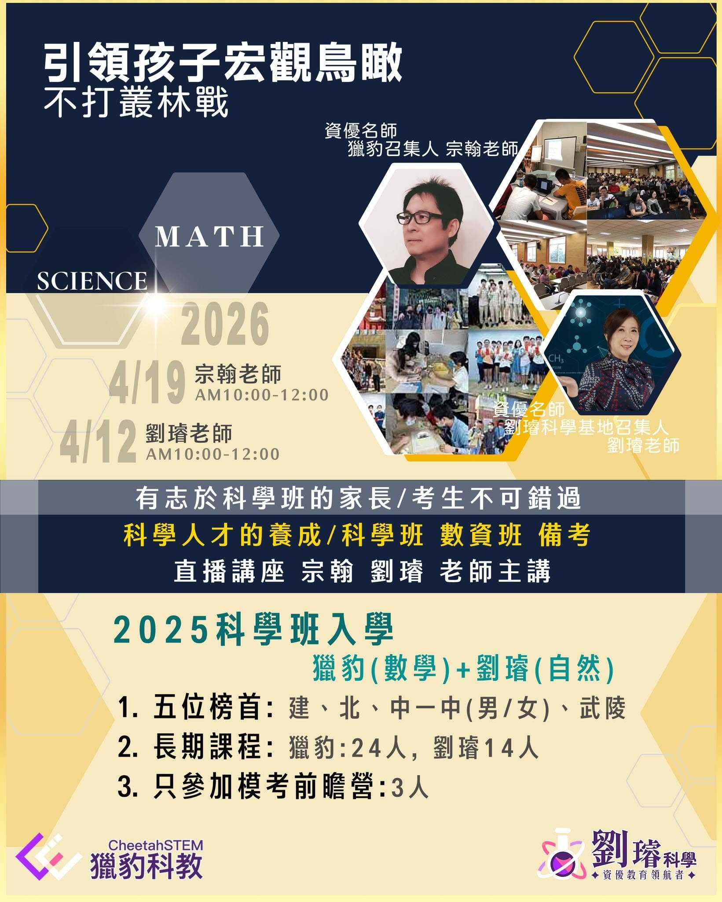

資優數學教育的長線視角
從能力養成、升學選擇到未來競爭力，這篇文章整理獵豹如何看待資優數學教育真正重要的核心，不把學習只縮成短期刷題。
獵豹觀點AMCAIME
閱讀更多
輸入你正在找的主題，首頁、課程、獵豹菁英、文章專欄與一頁認識獵豹都可以直接搜尋。
目前首頁固定保留你指定的最新消息卡片，方便家長快速看到近期的重要活動與公告。

整理科學班前瞻營、學習方向與報名資訊，讓正在規劃資優與科學班路線的家庭能快速掌握重點。
首頁固定呈現你指定的三篇成果卡，讓家長直接看到獵豹長期累積出的學生表現與代表故事。